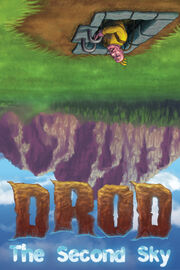

DROD: The Second Sky
DROD: The Second Sky
Detalles
|  | |
| Tiempo de juego | 2h 0m 0s |
| Última actividad | 4/1/2022 11:02:55 |
| Añadido | 16/3/2022 22:03:25 |
| Modificado | 17/3/2022 16:44:42 |
| Estado de finalización | Jugado |
| Librería | Steam |
| Fuente | Steam |
| Plataforma | PC (Windows) |
| Fecha de lanzamiento | 21/6/2014 |
| Puntuación de la Comunidad | 78 |
| Puntuación de la Crítica | |
| Puntuación de usuario | |
| Género | Adventure Indie Strategy |
| Desarrollador | Caravel Games |
| Editor | Caravel Games |
| Característica | Achievements Captions Available Cloud Saves Includes Level Editor Remote Play Together Single Player |
| Enlaces | Punto de encuentro Discusiones Guías Noticias Página de la tienda PCGamingWiki Logros |
| Tag | [HLTB] 80 a 90 horas |
Descripción
The Second Sky is the latest major title in the "Deadly Rooms of Death" (DROD) turn-based strategy and tactics puzzle game series. DROD is a unique dungeon-crawling puzzle game that could be succinctly described as "chess in a Zelda-like environment." This series highlights turn-based strategy and tactics on a top-down 2D grid.
This game is the culmination of years of development and evolution of the DROD formula. It is designed as a tremendously rewarding experience for the hardcore puzzle gamer. We are making this game especially for those who love puzzles and dungeon delving. It features a plethora of novel game and puzzle elements that you have not seen anywhere else, placed onto a backdrop of a unique and epic story full of peculiar characters and engaging locales.
The story
Guide Beethro Budkin, professional dungeon pest exterminator, as he goes up against the Rooted Empire in a race against time under the looming Grand Event. Beethro is always fond of saying "there is no problem that can't be solved with a really big sword," but he will need to use a variety of fresh new weapons and tactics to win the day this time against a dire threat. This is the climactic chapter in Beethro's adventures in the Great Beneath.
Are you new to DROD? If so, then I envy you. Amazing puzzles await you in The Second Sky. But if you're a new player, we suggest you begin your journey at an easier point in our beginner-friendly title, "DROD: Gunthro and the Epic Blunder" here: http://store.steampowered.com/app/314330.
Here is what is in our latest offering:
This game is the culmination of years of development and evolution of the DROD formula. It is designed as a tremendously rewarding experience for the hardcore puzzle gamer. We are making this game especially for those who love puzzles and dungeon delving. It features a plethora of novel game and puzzle elements that you have not seen anywhere else, placed onto a backdrop of a unique and epic story full of peculiar characters and engaging locales.
The story
Guide Beethro Budkin, professional dungeon pest exterminator, as he goes up against the Rooted Empire in a race against time under the looming Grand Event. Beethro is always fond of saying "there is no problem that can't be solved with a really big sword," but he will need to use a variety of fresh new weapons and tactics to win the day this time against a dire threat. This is the climactic chapter in Beethro's adventures in the Great Beneath.
Are you new to DROD? If so, then I envy you. Amazing puzzles await you in The Second Sky. But if you're a new player, we suggest you begin your journey at an easier point in our beginner-friendly title, "DROD: Gunthro and the Epic Blunder" here: http://store.steampowered.com/app/314330.
Here is what is in our latest offering:
- Over 500 puzzle rooms and 30 levels, each organized around a different type of puzzle element.
- Over 25,000 user-made rooms available for free download!
- Many, many secrets and optional extra challenges that lie in store for the more curious and adventuresome, uncovered in a variety of ways.
- Over a dozen new puzzle elements, including new weapons and monsters with play mechanics that you haven't seen in any other game.
- Journey across multiple overworld maps as you explore over and under the vast continents of the Eighth.
- This game has over four hours of music, containing an all-new 90-minute soundtrack composed by synthpop artist Jon Sonnenberg of Travelogue, plus ten thematic tracks by Emmett Plant (check out the OST).
- A epic story, filled with a host of fun and intriguing characters, each portrayed with quality voice acting.
- New and upgraded in-game artwork, including three all-new terrain styles, with realtime lighting and a range of environmental effects.
- Full-featured level/campaign editor, with custom scripting engine and modding capabilities.
- Active and friendly player community.
- High score competition and hint system via our CaravelNet service.